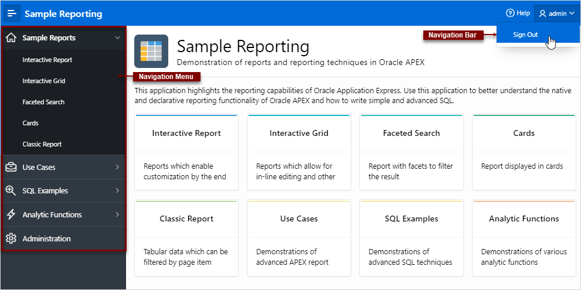

14.1 About Using Lists as Navigation
Add navigation to your application by creating a list (or a shared collection of links). Newer themes, such as Universal Theme - 42, support the creation of navigation menus and navigation bars.
You add a list to a page by creating a region and specifying the region type as List. You control the appearance of a list through list templates. For example, you can create a static list that functions as navigation using the template Vertical Unordered List with Bullets. Navigation menus are lists that render at the top of the page (similar to tabs) or display as a side bar. A navigation bar displays with a list template in the #NAVIGATION_BAR# position on your page template.
The Sample Reporting sample app, shown below, includes both a navigation menu and a navigation bar.

Description of the illustration navigation_example.png
Tip:
To install the sample app, Sample Reporting, see Installing Apps from the Gallery.
Parent topic: Adding Navigation